광고도장기능사 (2002-04-07 기출문제)
1과목: 공예디자인
1. 불규칙한 형의 진주를 의미하는 말로서, 르네상스양식에 뒤이어 그에 대한 반동적 양식으로 탄생된 것은?
- 바로크(Baroque)
- 로코코(Rococo)
- 로마네스크(Romanesque)
- 고딕(Gothic)
(정답률: 알수없음)

2. 양산 공예품의 형태에 관한 설명 중 올바른 것은?
- 복잡할 수록 기교가 높아 양산성이 풍부하다.
- 자연물을 있는 그대로 제작하므로 심미성이 높다.
- 희귀한 재료를 사용할 수록 양산성과 미려도가 좋다.
- 기계의 성능에 따라 형태의 제약을 받을 수 밖에 없다.
(정답률: 알수없음)
3. 평면의 형(Shape)은 선(線)의 이동에 따라 이루어 진다. 입체의 형(form)은 무엇의 이동에 따라 이루어 지는가?
- 점(點)
- 선(線)
- 면(面)
- 점과 선
(정답률: 알수없음)
4. 같은 크기의 점이 두개 있다면 주의력은 어떻게 느껴지는가?
- 서로 미는 힘으로 통합된다.
- 서로 팽팽하게 맞서는 장력을 느낀다.
- 왼쪽으로 움직이는 힘이 생긴다.
- 오른쪽으로 움직이는 힘이 생긴다.
(정답률: 알수없음)
5. 자연형을 편화해 나가는 차례를 바르게 표시한 것은?
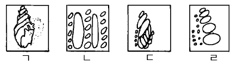
- ㄱ - ㄴ - ㄷ – ㄹ
- ㄱ - ㄷ - ㄹ - ㄴ
- ㄴ - ㄱ - ㄷ – ㄹ
- ㄴ - ㄷ - ㄹ - ㄱ
(정답률: 알수없음)
6. 독일 공작연맹이 결성되어 주장한 것은?
- 미술의 특성화
- 조형의 규격화
- 수공예의 장식화
- 양식의 분리화
(정답률: 알수없음)
7. 명도가 높은 순서부터 차례로 배열된 것은?
- 귤색, 연지, 다홍, 연두
- 귤색, 노랑, 다홍, 빨강
- 노랑, 주황, 검정, 자주
- 노랑, 연두, 초록, 남색
(정답률: 알수없음)
8. 다음 중 중간혼합과 관계 있는 것은?
- 가산 혼합
- 회전 혼합
- 감산 혼합
- 색광 혼합
(정답률: 알수없음)
9. 다음 색채에 관한 설명 중 옳은 것은?
- 난색은 후퇴감을 준다.
- 명도가 낮은 색은 진출감을 준다.
- 색상으로는 진출 후퇴감을 느낄수 없다.
- 채도가 높은 색일수록 진출감을 준다.
(정답률: 알수없음)
10. 다음 그림 중 색의 중량감을 이용했을 때 가장 안정감이 있는 것은?
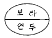
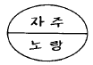
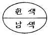
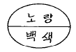
(정답률: 알수없음)
11. 원이 가장 크게 보이는 배색은? (단, 각 항의 바탕면적과 놓여진 원의 크기는 같다.)
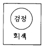
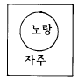
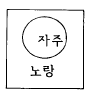
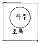
(정답률: 알수없음)
12. 제도용구 중 디바이더(divider)의 사용은?
- 직선을 그을 때
- 각도를 측정할 때
- 선의 길이를 옮기거나 등분할 때
- 원과 타원을 그릴 때
(정답률: 알수없음)
13. 선의 종류와 용도 중에서 치수선, 해칭(hatching)선으로 사용되는 것은?
- 굵은 실선
- 가는 실선
- 자유 실선
- 가는 일점 쇄선
(정답률: 알수없음)
14. 치수 기입을 하기 어려울 때 사용되는 선은?
- 실선
- 치수 보조선
- 치수선
- 지시선
(정답률: 알수없음)
15. 원과 같은 면적의 정사각형을 작도할 때, 어느점을 각각 중심으로 AB를 반지름으로한 원호를 그리는가?
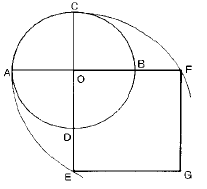
- A, B
- C, D
- E, F
- B, D
(정답률: 알수없음)
16. 다음 그림과 같이 주어진 직선 AB를 수직 2등분 할 때 맞지 않는 것은?
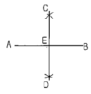
- AE = BE
- AC = BC
- AE = CE
- CD ⊥ AB
(정답률: 알수없음)
17. 다음 물체를 A의 화살표 방향으로 본 투상도(평면도)는?
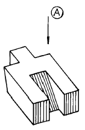
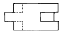
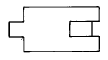
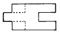
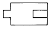
(정답률: 알수없음)
18. 다음 그림은 점을 투상한 것이다. 점의 위치가 공간에 있는 것은?
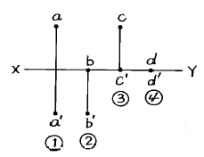
- ①
- ②
- ③
- ④
(정답률: 알수없음)
19. 구성의 요소가 규칙적으로 변화해가는 상태로서 요소의 증대나 감소의 두 방향성을 가지는 율동은?
- 점층의 율동
- 되풀이 율동
- 자유로운 율동
- 기하학적 율동
(정답률: 알수없음)
20. 다음 중 혼합한 결과가 명청(明淸)색인 것은?
- 순색 + 검정
- 순색 + 회색
- 순색 + 흰색
- 녹색 + 회색
(정답률: 알수없음)
2과목: 광고도장재료
21. 먼셀(Munsell)색채계에서 5R 4/14표시 중 명도는?
- 4
- 5
- 14
- 4/14
(정답률: 알수없음)
22. 색의 감정적인 효과를 실생활에 이용하는 것은?
- 색채인지
- 색채조절
- 색채배열
- 색채이론
(정답률: 알수없음)
23. 시멘트의 성분과 물과의 화학적인 결합은?
- 경화작용
- 수화작용
- 풍화작용
- 응결작용
(정답률: 알수없음)
24. 래커의 특징과 유성도료의 특징을 혼용한 래커는?
- 투명래커
- 호트래커
- 특수래커
- 하이솔리드래커
(정답률: 알수없음)
25. 입자가 고르며 일반적으로 건조, 광택, 경도가 좋으나 내후성이 떨어지는 도료는?
- 조합 페인트
- 유성 에나멜
- 페놀 수지 도료
- 수성 도료
(정답률: 알수없음)
26. 아스팔트, 피치(pitch) 등을 원료로 한 오일니스로 내수성, 내약품성은 좋으나 내후성이 없고 변색이 일어나므로 대개 금속의 간단한 녹막이로 쓰이는 것은?
- 단유성 니스
- 중유성 니스
- 장유성 니스
- 흑 니스
(정답률: 알수없음)
27. 다음 중 수채화 용지로서 가장 적합한 것은?
- 모조지
- 갱지
- 켄트지
- 트레이싱지
(정답률: 알수없음)
28. 두꺼운 종이를 기계로 주름 잡아 놓은 것은?
- 코트(coat)지
- 마이카스(micas)지
- 브론즈(bronze)지
- 크리프(crepe)지
(정답률: 알수없음)
29. 다음 중 아크릴 가공시 가장 많이 이용되는 접착제는?
- 본드
- 실리콘
- 접착테프
- 클로르포름
(정답률: 알수없음)
30. 강판의 후판(厚板)과 박판(薄板)에 관한 설명 중 맞는 것은?
- 두께 1mm 이상은 후판, 두께 1mm 미만은 박판
- 두께 3mm 이상은 후판, 두께 3mm 미만은 박판
- 두께 6mm 이상은 후판, 두께 6mm 미만은 박판
- 두꺼운 판은 후판, 얇은판은 박판이라 부르며 일정한 기준은 없다.
(정답률: 알수없음)
31. 다음 중 비철금속이 아닌 것은?
- 주철
- 주석
- 니켈
- 알루미늄
(정답률: 알수없음)
32. 거친목, 중목, 세목, 극세목으로 분류하여 사용하는 연마제는?
- 탈지
- 퍼티
- 중도
- 콤파운드
(정답률: 알수없음)
33. 다음 조명등 중 안전기를 필요로 하지 않는 것은?
- 수은등
- 형광등
- 나트륨등
- 할로겐등
(정답률: 알수없음)
34. 다음 중 목재 수축률의 비가 올바른 것은? (단, 섬유방향 : 무늬결 방향 : 곧은결 방향)
- 1 : 10 : 20
- 1 : 5 : 10
- 1 : 20 : 10
- 1 : 10 : 5
(정답률: 알수없음)
35. 다음 중 목재를 건조시키는 목적과 거리가 먼 것은?
- 중량의 경감
- 강도의 증진
- 가공성 향상
- 수축 균열의 방지
(정답률: 알수없음)
36. 다음 중 페놀수지나 멜라민 공축합 수지를 사용하여 외기 및 해수나 미생물에 침해되지 않도록 한 수출용 합판은?
- 1형 합판(완전내구성)
- 2형 합판(고도내구성)
- 3형 합판(보통내구성)
- 내장용 합판
(정답률: 알수없음)
37. 다음 중 플라스틱의 장점이 아닌 것은?
- 가공이 용이하다.
- 착색이 용이하고 가볍다.
- 전기 절연성이 우수하다.
- 내후성이 좋고, 자외선에 강하다.
(정답률: 알수없음)
38. 콩으로 만든 풀의 끈끈한 접착 성분은?
- 알부민
- 리그닌
- 피브로인
- 카세인
(정답률: 알수없음)
39. 목재의 나이테에 대한 설명 중 맞는 것은?
- 가을과 겨울철에 성장한 부분이 폭이 넓고 두꺼운 층을 이룬다.
- 같은 나무 종류에서 나이테의 간격이 클수록 비중이 크다.
- 열대지방일수록 나이테의 형성이 확실하다.
- 같은나무 종류에서 춘재부가 차지하는 면적이 넓을수록 강도가 작다.
(정답률: 알수없음)
40. 백열등을 형광등과 비교한 설명 중 올바른 것은?
- 빛이 희다.
- 경제적이다.
- 따듯하고 편안한 느낌이 들게 한다.
- 사물을 평면적으로 보이게 한다.
(정답률: 알수없음)
3과목: 광고도장
41. 함석에 도료의 부착성을 좋게하기 위한 방법은?
- 풍화법
- 프렘크리너법
- 스케링해머법
- 분체도장법
(정답률: 알수없음)
42. 유성 조합 페인트 사용시 도막에 붓자욱을 내는 원인은?
- 소지가 도료의 흡수성을 약하게 나타낼 경우
- 도료의 안료분이 많고 거치른 경우
- 광택이 없는 것 보다 있는 페인트의 경우
- 붓이 부드러운 털일 경우
(정답률: 알수없음)
43. 가로형 간판의 표시방법에서 돌출폭은 몇 cm 이내이어야 하는가?
- 10cm 이내
- 30cm 이내
- 50cm 이내
- 60cm 이내
(정답률: 알수없음)
44. "광고매체"에 관한 설명이 올바른 것은?
- 상품광고,기업광고,공공광고 등 광고의 종류를 말함
- 광고재료인 페인트, 금속, 아크릴, 네온 등을 말함
- 광고를 하기 위한 시장조사를 말함
- 광고 메시지를 전하는 수단을 말함
(정답률: 알수없음)
45. 다음 중 광고 활동에 기초가 되는 광고 기본계획의 주요 연구 대상과 거리가 먼 것은?
- 제품
- 시장(소비자)
- 매체
- 광고주
(정답률: 알수없음)
46. 해외수출 상품을 위한 광고수단 중 그 효과가 가장 큰 것은?
- 선접탑
- 벽보
- 카렌다
- 팜프렛
(정답률: 알수없음)
47. 문자 디자인을 하는 가장 큰 이유는?
- 보기에 아름답게 하기 위하여
- 문자를 보급하기 위하여
- 사람의 주의를 끌기 위하여
- 읽기 쉽고 효과있게 하기 위하여
(정답률: 알수없음)
48. 옴[Ω]의 법칙이 맞게 표시된 것은? (전류 I, 전압 E, 저항 R)
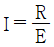
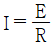
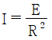
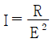
(정답률: 알수없음)
49. 2차전압 15KV네온변압기 1대에 네온관 12미터(m)를 사용할 경우와 3미터(m)를 사용할 경우의 전력 사용량의 비교 설명 중 맞는 것은?
- 12m 사용시가 전력사용량이 많다.
- 3m 사용시가 전력사용량이 많다.
- 네온관의 사용길이에 관계없이 전력사용량은 같다.
- 네온관의 길이에 전력사용량은 비례한다.
(정답률: 알수없음)
50. KS 안전 색채 사용통칙에서 대피장소 및 방향을 표시하는 표시에 사용되는 색은?
- 녹색, 흰색
- 연두색, 흰색
- 황색, 검정
- 파랑, 흰색
(정답률: 알수없음)
51. 배전반은 스위치를 조작하기 위하여 앞벽과의 사이를 몇 m 이상 띄어서 설치하는 것이 좋은가?
- 0.5m
- 1.5m
- 3.0m
- 5.0m
(정답률: 알수없음)
52. 한국산업규격의 제도통칙(KS F 1501)에서 문자의 규정 중 숫자는 어느 것을 원칙으로 하는가?
- 아라비아숫자
- 로마숫자
- 고딕숫자
- 그래픽숫자
(정답률: 알수없음)
53. 크고 넓은 벽면에 수퍼그래픽스(super graphics)를 제작하는데 사용되는 수성붓으로 가장 적당한 것은?
- 털이 부드럽고 도료의 함유량이 풍부한 것
- 털이 뻣뻣하고 도료의 함유랑이 적은 것
- 폭이 좁고, 털이 부드럽고 도료의 함유량이 적은 것
- 폭이 좁고, 털이 굵으며 도료의 함유량이 보통인 것
(정답률: 알수없음)
54. 도장작업을 할 때 유의해야 할 사항이 아닌 것은?
- 도료혼합을 잘 해야 한다.
- 저온 다습한 환경을 조성한다.
- 도막의 건조는 매회 충분히 해 준다.
- 먼지, 직사광선을 피한다.
(정답률: 알수없음)
55. 대형 제재용 또는 곡선가공에 주로 사용하는 톱은?
- 띠톱
- 둥근톱
- 양날톱
- 등대기톱
(정답률: 알수없음)
56. 다음 허가 및 신고 광고물 중 시· 도지사에게 허가를 받아야만 표시· 설치할 수 있는 옥외광고물은?
- 벽보
- 전단
- 현수막
- 선전탑
(정답률: 알수없음)
57. 도장붓의 취급 및 보관 요령 중 잘못 설명된 것은?
- 새 붓은 밑칠용으로 쓰고 길들여진 붓은 윗칠용으로 쓴다.
- 새 붓은 도료를 묻혀 거친면에 문질러 빠지는 털을 없앤다.
- 매일 사용하는 붓은 기름이 담긴 통에 털끝이 바닥에 닿게 보관한다.
- 사용한 붓은 도료를 충분히 씻어내고 불 건조유에 담가 놓는다.
(정답률: 알수없음)
58. 실크 스크린 감광시, 직접 사진 제판법에 사용되는 광원으로 부적합 한 것은?
- 아크등
- 자외선 램프
- 손전등
- 형광등
(정답률: 알수없음)
59. 등각 투상도에서 축선 상호간의 각도(세변이 이루는 각)는?
- 60°
- 90°
- 120°
- 180°
(정답률: 알수없음)
60. 사업장에서 우발적으로 발생하는 사고로 인하여 신체적 상해와 경제적 손실을 입는 것을 뜻하는 것은?
- 산업재해
- 산업활동
- 산업환경
- 산업안전
(정답률: 알수없음)